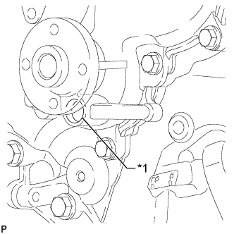
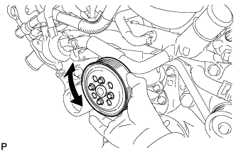

WATER PUMP > ON-VEHICLE INSPECTION |
| 1. INSPECT FOR COOLANT LEAK |
Visually inspect the engine compartment for the following conditions:
There is a large amount of coolant in the engine compartment or on the underside of the hood near the fan and generator V belt.
Liquid coolant is dripping from around the water pump.
The coolant level in the reservoir is below the L line and there are traces of leakage around the water pump.
If any of the above conditions exist, replace the water pump assembly.
Inspect the area around the water pump.
Remove the fan and generator V belt (Click here).
Remove the water pump pulley (Click here).
|  |
Press a piece of paper towel against the drain plug or deposits on the lip of the drain plug and check that the paper towel is not wet.
| *1 | Drain Plug |
Install the water pump pulley (Click here).
| 2. INSPECT WATER PUMP ASSEMBLY |
|  |
Turn the pulley and check that the water pump bearing moves smoothly and quietly.
If necessary, replace the water pump assembly.
Install the fan and generator V belt (Click here).